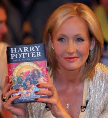

Коротка біографія
Джоан Роулінг — британська письменниця, яка стала відомою завдяки серії книг про Гаррі Поттера. Її твори стали популярними у багатьох країнах світу та були перекладені багатьма мовами.
Ідея історії про хлопчика-чарівника виникла у письменниці під час подорожі потягом. Згодом ця ідея перетворилася на одну з найвідоміших книжкових серій сучасності.

Інші відомі твори
- Гаррі Поттер і таємна кімната
- Гаррі Поттер і в’язень Азкабану
- Гаррі Поттер і келих вогню
- Гаррі Поттер і Орден Фенікса
- Гаррі Поттер і напівкровний принц
- Гаррі Поттер і смертельні реліквії